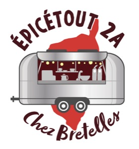

Foodtruck & Traiteur · rustique & exotique
Chez Bretelles
Propriano · Olmeto · Sartène · et toute la Corse-du-Sud Réserver mon foodtruck → Voir où on est →Au quotidien
Chaque jour ou presque, le foodtruck s'installe aux alentours de Propriano. Au menu : des plats faits maison le matin même, entre tradition rustique corse et influences du monde — Asie, Méditerranée, épices d'ailleurs.
Pas de cuisine industrielle. Juste ce qu'il y a de bon ce jour-là, cuisiné avec soin, servi avec le sourire.
Pour savoir où on est et ce qu'on cuisine aujourd'hui, le plus simple c'est Instagram — on poste le menu et la localisation chaque matin.
Les prix, pour situer
Le menu change tous les jours, donc les prix bougent un peu avec. Ces fourchettes concernent le service quotidien — pour un événement privé, c'est un devis sur mesure.
Les horaires, en gros
On sort 6 jours sur 7 — le midi de 11h30 à 14h30, le soir de 18h30 à 21h. Mais on est un foodtruck : le jour de repos bouge, il arrive qu'on ferme deux jours, et l'emplacement change. C'est Instagram qui fait foi chaque matin.
On poste chaque matin où on est et ce qu'on cuisine. C'est là que tout se passe.
Voir le profil @epicetout2aNous trouver
La localisation exacte du jour est toujours sur Instagram. En attendant, voici où on gravite.
Avis collectés et modérés par Google.
Mariage, anniversaire, séminaire, fête de village… On privatise le foodtruck pour vos événements dans toute la Corse-du-Sud.
Obtenir mon devis →Simple & sans stress
Remplissez le formulaire ci-dessous — 2 minutes. On revient vers vous sous 24h pour en discuter.
Par téléphone ou en se rencontrant, on adapte les plats à vos envies, à vos convives et à votre budget.
Le foodtruck arrive, les guirlandes s'allument. Vous profitez — on s'occupe du reste.
Nos formules
Chaque événement est unique. Voici nos formules de base — tout est adaptable selon vos besoins.
Cocktail dinatoire, brunch champêtre, repas assis sous les étoiles… On s'adapte à votre format, à vos convives et à l'ambiance que vous rêvez. Le foodtruck s'intègre à votre décor, vos couleurs, votre histoire. Menu 100 % fait maison, personnalisé avec vous lors d'un premier échange. Devis sur mesure, sans engagement. En savoir plus →
Formule conviviale et détendue : buffet, plancha, cuisine du monde ou rustique corse selon vos envies. Idéal pour créer une ambiance différente et mémorable. Service le midi ou le soir. En savoir plus →
Repas d'équipe, pause déjeuner de séminaire, incentive ou soirée de clôture. Facturation pro, menu adapté à vos contraintes. On se déplace partout en Corse-du-Sud. En savoir plus →
On connaît les fêtes corses, on les aime. Menu adapté aux grandes tablées, service rapide, ambiance garantie. Tarifs préférentiels pour les associations locales. En savoir plus →
Pour que le repas de famille sorte de l'ordinaire. Cuisine maison, plats généreux, service convivial. On s'adapte à tous les âges et à toutes les envies.
Vous avez un cuistot sous la main, un concept bien à vous, ou vous voulez juste le foodtruck pour son look ? On loue le foodtruck seul — sans équipe ni denrées. Idéal pour les tournages, les animations de marque, les événements créatifs ou les projets qui sortent des sentiers battus. Devis sur demande, tout s'étudie. En savoir plus →
On a listé ce qu'on fait… mais honnêtement, on n'a pas pensé à tout. Si vous avez une idée farfelue, originale, ou juste pas prévue dans la liste — demandez-nous un devis quand même. Le pire qu'on puisse dire, c'est non. Et ça nous est rarement arrivé.
😄
En savoir plus
Parlons-en
Remplissez le formulaire ci-dessous — on revient vers vous sous 24h pour construire votre menu ensemble.
On revient vers vous sous 24h · Devis gratuit et sans engagement
Les informations saisies sont utilisées uniquement pour répondre à votre demande de devis, stockées dans Google Forms. Conformément au RGPD, vous disposez d'un droit d'accès, de rectification et de suppression.
Les questions qu'on nous pose souvent
Épicétout2A s'installe aux alentours de Propriano, en Corse-du-Sud. La localisation exacte et le menu du jour sont publiés chaque matin sur Instagram : @epicetout2a
Oui ! On propose la location du foodtruck type Airstream seul, sans équipe ni denrées. Idéal pour les tournages, animations visuelles, événements de marque ou projets créatifs où vous apportez votre propre concept. Contactez-nous pour un devis sur mesure — tout s'étudie.
Épicétout2A est un foodtruck type Airstream disponible pour vos mariages en Corse-du-Sud. Menu personnalisé, service à table possible, ambiance chaleureuse et unique. Devis gratuit sous 24h.
On intervient dans toute la Corse-du-Sud (2A) — Ajaccio, Sartène, Bonifacio, Porto-Vecchio et les villages alentours. Et on peut se déplacer plus loin sur demande — il suffit de nous contacter !
Remplissez le formulaire ci-dessus. On vous rappelle sous 24h pour parler de votre événement, construire le menu ensemble et vous établir un devis gratuit et sans engagement.
Cuisine 100% fait maison, mêlant la tradition rustique corse (plats mijotés, produits locaux) aux influences du monde (Asie, Méditerranée, épices exotiques). Le menu change chaque jour et est entièrement personnalisable pour vos événements.
On s'adapte ! Menu et organisation sont ajustés selon le nombre. Contactez-nous pour qu'on trouve la formule qui vous convient.
Le tarif dépend du type d'événement, du nombre de convives, du menu et de la localisation. Tout est personnalisé — c'est pourquoi on établit un devis gratuit et sans engagement sous 24h. Remplissez le formulaire ci-dessus pour obtenir votre estimation, ou consultez le détail de ce qui fait varier le prix.
Oui — Épicétout2A propose la location du foodtruck type Airstream en Corse-du-Sud, avec ou sans équipe de cuisine. Besoin du truck pour son look uniquement (tournage, animation de marque, événement créatif) ? C'est possible aussi. Tout s'étudie, contactez-nous.
Au quotidien, comptez 4 à 6 € pour une entrée, 9 à 16 € pour un plat et 3 à 5 € pour un dessert. Le menu change chaque jour, donc les prix bougent un peu avec. Ces fourchettes valent pour le service quotidien à Propriano : une privatisation d'événement fait l'objet d'un devis sur mesure.
On sort 6 jours sur 7, le midi de 11h30 à 14h30 et le soir de 18h30 à 21h. Mais on est un foodtruck : le jour de repos bouge d'une semaine à l'autre, il arrive qu'on ferme deux jours, et l'emplacement change. La seule info fiable pour aujourd'hui, c'est le post du matin sur @epicetout2a.
Pour un devis ou une privatisation, le formulaire ci-dessus est le plus rapide — on rappelle sous 24h. Vous pouvez aussi appeler directement au 06 81 30 21 57, ou envoyer un message Instagram sur @epicetout2a.
Oui, à domicile comme sur une propriété. Le foodtruck est une remorque : il faut qu'un véhicule tractant puisse accéder au terrain et y manœuvrer, et que le sol tienne. Envoyez-nous deux photos de l'accès et de l'emplacement envisagé — on vous dit tout de suite si c'est jouable, plutôt que de le découvrir le jour J.
Comptez 2 à 3 mois en haute saison (juin–septembre), période où les week-ends partent vite en Corse-du-Sud — et davantage encore pour une date d'été dans l'extrême sud. Hors saison, quelques semaines suffisent généralement. Dans le doute, écrivez-nous : on vous dit franchement si la date est tenable.
Le truck est autonome pour l'essentiel, mais un accès à l'eau et à l'électricité simplifie toujours le service, surtout sur les événements qui durent. On fait le point ensemble au moment du devis, selon le lieu exact.
Épicétout2A intervient pour les séminaires, pauses déjeuner, incentives et soirées de clôture en Corse-du-Sud. Menu adapté à vos contraintes, facturation pro, déplacement dans toute la 2A. Contactez-nous avec les détails de votre événement.